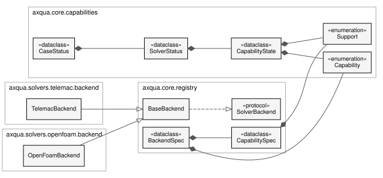

Solver-Agnostischer Kern
axqua.core enthält alles, was den Wasserkörper freie Oberfläche und die Modellierungsaufgabe unabhängig von einem Simulationscode beschreibt. Kein Modul dieses Pakets importiert ein Backend.
Geodaten und Raster
One reader for a case’s geodata layers.
Before this module, every part of axqua that needed a layer opened it itself:
fourteen modules each doing their own gpd.read_file plus a CRS reprojection, with
no caching. _read_mesh_zones alone was called from five places in a single build,
re-reading the same GeoPackage every time, and two modules reached into another
module’s private _channel_union because there was nowhere shared to put it. This
is that shared place.
What is cached, and what deliberately is not
Only the raw layer is cached - the expensive part, the disk read and the
reprojection. Everything derived from it is recomputed per call, because derived
values depend on configuration that legitimately changes during a session: the
mesh-convergence study rebuilds the same case at a ladder of mesh.size_scale
values, and caching the scaled zone edge lengths would hand every level after the
first the sizes of the level before it. That is a silent wrong-answer bug rather than
a crash, so the split is enforced by construction: Dataset.mesh_zones() derives
its columns fresh each time from a cached frame.
Layer sources
A layer may be given as a path (the normal case) or handed over already loaded
via Dataset.set_layer(). The second form exists because a QGIS plugin has the
layers open in the project already, and forcing it to write temporary GeoPackages so
axqua can read them back would be absurd.
- axqua.core.geodata.match_field(gdf, name)[Quellcode]
Case-insensitive column lookup (so ‚Zone Name‘/‘zone name‘ both match).
- axqua.core.geodata.parse_decimal(value)[Quellcode]
Parse a numeric attribute robustly.
A GeoPackage
doublefield already comes back as a float, but a field authored in a German-locale GIS may arrive as the string"0,5". Accept both: floats/ints pass through; strings have their decimal comma normalized to a point before parsing. ReturnsNonefor blanks / NaN / unparseable values so the caller can fall back to a configured default.- Rückgabetyp:
float | None
- axqua.core.geodata.classify_zone(name)[Quellcode]
Map a ‚Zone Name‘ to a zone type by substring (case-insensitive).
- axqua.core.geodata.fill_holes(geom)[Quellcode]
Return geom with all interior rings removed (only the exterior kept).
A mesh-zone author commonly carves holes into the channel polygon so a finer
refinementzone can be nested inside (e.g. around a structure). Such a hole is enclosed by channel on every side, so it is channel - just meshed finer. Dropping the holes keeps those nested pockets part of the channel footprint so they are pre-wetted with the rest of the channel.
- class axqua.core.geodata.Dataset(cfg)[Quellcode]
Bases:
objectA case’s geodata layers, read once and reprojected to the project CRS.
- set_layer(role, frame)[Quellcode]
Supply a layer directly instead of reading it from disk.
The seam a QGIS plugin needs: it already has the layers open, and should not have to round-trip them through temporary files. Also useful in tests.
- Parameter:
role (str)
- Rückgabetyp:
None
- layer(role, path=None)[Quellcode]
The raw layer for role, read at most once per
Dataset.Only this - the disk read and the reprojection - is cached. Anything derived from a layer is recomputed by its caller, because it may depend on config that changes between calls (see the module docstring).
- Parameter:
role (str)
- has(role, path=None)[Quellcode]
- roi_polygon()[Quellcode]
The region of interest as a shapely Polygon (polygonising lines if needed).
- mesh_zones()[Quellcode]
Mesh-zone polygons with the derived columns the meshers need.
Adds, per polygon:
_zone_type-channel/floodplain/refinement/other, from theZone Namefield (classify_zone());_edge_length- target max edge length [m] from theMax Edge Length (m)field (mesh.zone_size_field), falling back to the configured per-type default, then multiplied bymesh.size_scale;_prio- overlap priority, finest intent winning.
Recomputed on every call, never cached:
mesh.size_scaleis varied by the convergence study between builds of the same case, and a cached_edge_lengthwould give every level the previous level’s sizes.
- channel_union()[Quellcode]
Channel footprint: union of the
*channel*mesh zones, holes filled.Cacheable despite deriving from
mesh_zones(), because it uses only_zone_typeand the geometry - neither of whichmesh.size_scaletouches.
- centerline()[Quellcode]
The channel centerline as a single merged LineString (longest part).
- centerline_tangents(spacing)[Quellcode]
Sample the centerline ->
(points, unit tangents, KD-tree).Cached per spacing: the anisotropic mesher and the pre-wetting ask for different samplings of the same line, and each is a few thousand
interpolatecalls.- Parameter:
spacing (float)
- roughness_zones()[Quellcode]
- roughness_table()[Quellcode]
{zone_id: roughness}from the zone-roughness CSV.The first column is the integer zone id, the second the roughness value (e.g. a Nikuradse k_s) that HydroBayesCal later adjusts. A header row is detected and skipped; further columns are ignored.
- lines(role, path)[Quellcode]
Coordinate lists of every line in a layer (breaklines, and similar).
- Parameter:
role (str)
- region_seeds()[Quellcode]
(xy, matid)of the region seed points, or(None, None).
- liquid_boundaries()[Quellcode]
The raw inflow/outflow (and internal) boundary-line layer.
One of the most re-read layers in the codebase: the steering writer, the boundary classifier, the water-table fit and both meshers all want it, and each used to open it again.
- structures()[Quellcode]
The raw dam / weir / wall / building layer.
- centerline_frame()[Quellcode]
The raw centerline layer (callers that want the geometries, not tangents).
- class axqua.core.geodata.ZoneRoughness(zone_id, ks, ks_min=None, ks_max=None, calibrate=None)[Quellcode]
Bases:
objectOne row of the zone-roughness CSV.
ksis the nominal roughness that seeds the friction.tbland the geometry’sBOTTOM FRICTION; for a calibrated zone the calibrator overwrites it on every run, so it only has to be a sane starting point.ks_min/ks_maxare the calibration prior bounds andcalibratesays whether the zone is a calibration parameter at all (None= the table does not say, so the decision falls back to the config’s parameter list).- Parameter:
- axqua.core.geodata.read_roughness_zones(path)[Quellcode]
Standalone reader for the zone-roughness CSV (no Dataset required).
Two schemas are accepted, distinguished by the header:
bounds -
zone_id, ks_min, ks_max[, calibration]: the nominal ks is the midpoint of the prior, matching how a uniform prior’s central value is chosen elsewhere. A zone whose bounds are equal is a fixed roughness.legacy -
zone_id, ks: one value per zone, no bounds, no flag.
Header names are matched case-insensitively after stripping whitespace (the hand-edited CSVs carry
, ks_maxwith a leading space), and a headerless file falls back to positional columns.- Rückgabetyp:
- axqua.core.geodata.read_roughness_table(path)[Quellcode]
Standalone reader for the zone-roughness CSV ->
{zone_id: nominal ks}.The nominal value seeds the friction
.tbland the geometry’sBOTTOM FRICTION; seeread_roughness_zones()for the full record (prior bounds + calibration flag).
- axqua.core.geodata.nominal_channel_size(cfg)[Quellcode]
Effective (scaled) target channel edge length [m].
The smallest channel-zone
_edge_lengthfrom the mesh-zones gpkg when configured (per-zoneMax Edge Length (m)values override the*_sizefallbacks, sochannel_sizealone can misstate the built resolution), elsechannel_size * size_scale. Both already includemesh.size_scale.- Rückgabetyp:
- axqua.core.geodata.dataset(cfg)[Quellcode]
The
Datasetfor cfg, created once and kept on the config.Attached to the
Configinstance rather than held in a module-level cache so its lifetime is the config’s: two configs in one process (the convergence study holds several) never share a cache, and nothing has to be invalidated by hand.- Rückgabetyp:
Reading raster values at arbitrary points.
Separated from the meshers because both of them need it for the same reason - to put a bed elevation on a mesh node - and neither owns the DEM. Keeping it here is what lets the OpenFOAM backend sample the terrain without importing anything from the TELEMAC backend.
- axqua.core.raster.sample_raster_at(dem_path, x, y)[Quellcode]
Bilinear raster value at arbitrary points, nearest-filled where nodata.
- Parameter:
dem_path (Path)
x (numpy.ndarray)
y (numpy.ndarray)
- Rückgabetyp:
Ränder
Reading the liquid-boundary lines: which line is an inflow, which an outflow.
The layer that says where water enters and leaves a reach is shared: TELEMAC turns
it into the .cli boundary codes, OpenFOAM turns it into inlet-N / outlet-N
patches, and both must take flow in and out at exactly the same places or the two
models are not comparable. It lived in the TELEMAC .cli writer until the backends
were separated; nothing here knows about either solver.
The Inn dataset’s Type (inflow/outlfow) typo is deliberately still matched - the
layer is field data, and refusing to read it over a spelling mistake would help
nobody.
What each outflow condition prescribes at the outflow lines (OUTLET_LEVELS) is here as well, for the same reason: the case settings, the TELEMAC build and the hydrology build each ask it, and a list of condition names in each of them missed the overfall outlet twice when it was added.
- axqua.core.boundaries.OUTLET_LEVELS: dict[str, str | None] = {'elevation': 'fixed', 'free': None, 'normal_depth': 'curve', 'overfall': 'mesh', 'stage_discharge': 'rating'}
Noneno level (free, zero gradient of depth and velocity),"curve"a level TELEMAC takes from its own Z(Q) curve as the discharge changes (normal_depth),"fixed"the levelboundaries.prescribed_elevation(elevation),"rating"the level of the rating curveboundaries.stage_dischargeat the discharge of the case (stage_discharge),"mesh"a level below the lowest node, so that the lines hold no water (overfall).- Type:
What each outflow condition prescribes at the outflow lines, so that the code that writes or reads an outlet asks this one table instead of listing condition names
- axqua.core.boundaries.RIVER_OUTLETS = ('elevation', 'stage_discharge', 'free')
The outflow conditions of a river case (
boundaries.outflow_condition), the default first.
- axqua.core.boundaries.HYDROLOGY_OUTLETS = ('normal_depth', 'free', 'elevation', 'overfall')
The outflow conditions of a hydrology case (
hydrology.outlet_condition), the default first.
- axqua.core.boundaries.outlet_level(condition)[Quellcode]
Where the level of an outflow line under condition comes from (
OUTLET_LEVELS); a name that is no outflow condition raises.
- axqua.core.boundaries.liquid_lines(cfg)[Quellcode]
Return dict kind -> shapely geometry (union of that kind’s contour lines).
Internal source/sink lines (type tag starting ‚int‘, handled by
load_internal_source_regions()) are skipped so they never pull a contour node into an inflow/outflow classification.
- axqua.core.boundaries.liquid_line_details(cfg)[Quellcode]
Per non-internal liquid line:
{kind, discharge, geom}(discharge from the flow column, else None). Returns None when the layer has no flow column at all - the signal to fall back to node-share discharge splitting.
Strukturen
Dams, weirs, walls and buildings - authored in QGIS, meshed by either solver.
Why there is no STL here
The usual reason a river CFD workflow needs an STL is snappyHexMesh: it meshes a
background block and snaps it onto a triangulated surface, so every solid object has
to arrive as triangles. axqua does not use snappyHexMesh (see
axqua.solvers.openfoam.polymesh for why), and writes constant/polyMesh
directly. That removes the requirement entirely: a structure only has to tell the
mesher where its footprint is and how high it stands, and both are ordinary
vector attributes.
So a structure layer is a plain GeoPackage or shapefile that QGIS authors natively - digitize the footprint, type in a crest level - with no CAD step, no triangulation, and no format QGIS cannot round-trip.
Geometrie
Polygons are the footprint directly (a building, a dam body, a pier).
Lines are buffered by their width attribute to give a footprint. This is the natural way to draw a wall or a dam crest: you trace the crest and say how thick it is, rather than digitizing two parallel sides by hand.
Two modes, and the choice is hydraulic
overflow(dam, weir, embankment, levee)The bed is raised to the crest. Water passes over the structure when the level exceeds it, and the mesh is unchanged in plan - the structure is simply terrain that was not in the DEM. This is what a dam or weir is to a depth-averaged or free-surface model, and it works identically in both solvers.
solid(wall, floodwall, building, pier)The footprint is removed from the domain, so its sides become no-slip walls running from bed to lid. Use it for anything that is never overtopped: it is both cheaper (no cells inside the obstacle) and more correct (a genuine vertical face, rather than a very steep bed with a sliver of cells on top).
Height: two ways, meaning two different things
a crest elevation (m a.s.l.) gives a level crest - a dam, a weir, a floodwall;
a height (m above the local ground) gives a crest that follows the terrain - an embankment or levee of constant build height.
Both are common; neither is a good default for the other, so the field you fill in is what decides.
- axqua.core.structures.classify_structure(text)[Quellcode]
Map a structure’s type text to
solidoroverflow.Same substring convention as the mesh zones (
axqua.core.geodata. classify_zone()), so a user who has learned one has learned the other. Anything unrecognized isoverflow: raising the bed is the conservative failure, since it keeps the domain connected and lets water pass, whereas wrongly blanking a footprint would silently wall off part of the reach.
- class axqua.core.structures.Structure(name, mode, polygon, crest=None, height=None, spine=None)[Quellcode]
Bases:
objectOne dam, weir, wall or building, ready to apply to a mesh.
- Parameter:
- spine: object | None = None
The line the footprint was buffered from, when there was one. It is the structure’s medial axis, and blanking_rule: area needs it: any path from one side of a wall to the other must cross it, so blanking the elements it passes through is what keeps the tighter rule sound on a wall thinner than an element.
- summary()[Quellcode]
- Rückgabetyp:
- axqua.core.structures.load_structures(cfg)[Quellcode]
Read
geodata.structuresintoStructureobjects.Lines are buffered to their width (
width_field, elsestructures.default_width) with flat ends, so a wall drawn as a single line becomes a rectangle of the right thickness rather than a lozenge with rounded caps that would over-block the channel at each end.
- axqua.core.structures.medial_axis(structure)[Quellcode]
(blank_along, verify_against)- the curve any path across structure crosses.Three sources, in order:
the line it was buffered from, when there was one. Exact, and the usual case: a wall is normally drawn as a line with a thickness.
a Voronoi skeleton of the footprint. This is what a CAD-derived footprint needs, and it is why the previous rotated-rectangle shortcut was useless here - it is guarded by a rectangularity test that correctly refuses an 11.87 m2 L-shaped snake, and 19 of munich-vsf’s 20 structures are exactly that, so the tighter rule silently never fired.
the long axis of the minimum rotated rectangle, kept for a genuinely rectangular footprint, where it is exact and free.
(None, None)when none applies, which is the caller’s signal to fall back to the conservative rule rather than guess an axis and silently unseal a wall.
- axqua.core.structures.solid_mask(structures, xy, *, triangles=None, min_area=0.0)[Quellcode]
Points that fall inside a
solidstructure and must leave the domain.Pass triangles to use the element rule of
_crossed(), which is what the bed raise uses. The two must agree: a node whose bed was lifted onto a crest but which still counts as open water is exactly the inconsistency that perches water on a wall or prescribes a discharge onto one.
- axqua.core.structures.covered_mask(structures, xy, *, triangles=None, min_area=0.0)[Quellcode]
Points any structure covers, whatever its mode.
Every structure raises the bed where it stands, so this is the set of nodes whose bed is a crest rather than the terrain - the nodes a uniform-depth initial seed must not wet.
- axqua.core.structures.blanking_area(cfg)[Quellcode]
structures.blanking_areawhen thearearule is chosen, else 0.One place, so the bed raise, the boundary classification and the dry-start plug cannot disagree about which elements a wall stands on - an inconsistency there perches water on a wall or prescribes a discharge onto one.
- Rückgabetyp:
- axqua.core.structures.apply_to_bed(structures, xy, bed, *, triangles=None, min_area=0.0)[Quellcode]
Raise bed to every
overflowstructure’s crest.Returns
(bed, touched). The bed is only ever raised, never lowered (maximum): a structure adds material to the terrain, and a crest digitized slightly below the surveyed ground should not carve a trench through it.Pass triangles - the
(NELEM, 3)connectivity - to raise by element rather than by node, which is what a structure narrower than an element needs; see_crossed(). Without it the node test is used, and a thin wall leaks.
- axqua.core.structures.solid_footprint(structures)[Quellcode]
Union of the
solidfootprints, orNonewhen there are none.
Gelände von CAD-Oberflächen
Triangulated CAD surfaces (STL) as the terrain and domain description of a case.
Why this exists, given axqua.core.structures argues the opposite
That module explains why a structure needs no STL: axqua writes its own mesh, so a dam only has to say where its footprint is and how high it stands. Nothing there changes. What this module addresses is the other direction - a case whose terrain itself arrives as CAD, because the thing being modeled was designed rather than surveyed. A fish pass, a culvert, a flume, a spillway: there is no DEM of it, and there never will be, because it exists as a construction drawing.
The design decision is therefore not to teach the meshers about triangles. It is to decompose a set of STL parts, once, into exactly the artifacts axqua already consumes:
STL part |
becomes |
|---|---|
bed-like surfaces |
a DEM GeoTIFF, i.e. |
their coverage |
the ROI polygon, i.e. |
near-vertical surfaces |
|
inlet / outlet patches |
the lines of |
per-part materials |
|
After that stage every downstream step - the gmsh mesher, the .cli classification,
the OpenFOAM lattice - runs unchanged and unaware that a CAD file was ever involved.
That is the whole point: one new stage instead of a second geometry pathway through
the entire package.
A height field is not the same thing as a solid
A CAD assembly is a set of closed volumes; a DEM is a single-valued function z(x, y).
The conversion is lossy wherever the geometry is not single-valued, which for a fish
pass is precisely at its walls. Hence the slope split: facets flatter than
max_slope_deg are bed and are rasterised, facets steeper than min_slope_deg
are walls and become footprints with a crest elevation, and what falls between the two
is reported rather than silently assigned. Overhangs (a soffit, a cantilevered
walkway) cannot be represented at all and are counted in the report, because a
modeler needs to know how much of the geometry the height field dropped.
Reading STL
Binary STL is a fixed 84-byte header followed by 50 bytes per triangle, so it reads in
one numpy call with a structured dtype - no dependency, and fast enough that the
550 MB parts of a real CAD export are limited by disk rather than by parsing. ASCII
STL is parsed by streaming the vertex lines. pyvista and meshio would both
do this, but neither is worth a hard dependency in axqua.core, which the QGIS
plugin’s capability queries import.
- axqua.core.surfaces.BINARY_TRIANGLE_BYTES = 50
12 floats (normal + 3 vertices) + 2 attribute
- Type:
bytes per triangle in a binary STL
- axqua.core.surfaces.BINARY_HEADER_BYTES = 80
bytes of header before the triangle count
- axqua.core.surfaces.CHUNK_TRIANGLES = 1000000
triangles read per chunk, keeping peak memory near 100 MB for any file size
- axqua.core.surfaces.BED_MAX_SLOPE_DEG = 45.0
a facet flatter than this (degrees from horizontal) is bed
- axqua.core.surfaces.WALL_MIN_SLOPE_DEG = 70.0
a facet steeper than this is a wall
- class axqua.core.surfaces.Surface(triangles, name='')[Quellcode]
Bases:
objectA triangulated surface:
trianglesis(n, 3, 3)of xyz per corner.Normals are recomputed from the vertex winding rather than trusted from the file. Exporters disagree about winding and some write zero normals, and every decision here - bed or wall, up or down - hangs on the normal, so it is not something to take on faith from a header field.
- Parameter:
triangles (numpy.ndarray)
name (str)
- triangles: numpy.ndarray
- property normals: numpy.ndarray
Unit normals from the vertex winding; degenerate facets give a zero normal.
- property bounds: tuple[float, float, float, float, float, float]
(xmin, ymin, zmin, xmax, ymax, zmax).
- slope_deg()[Quellcode]
Angle of each facet from horizontal, 0 = flat, 90 = vertical.
- Rückgabetyp:
- select(mask)[Quellcode]
- Parameter:
mask (numpy.ndarray)
- Rückgabetyp:
- transformed(transform)[Quellcode]
- class axqua.core.surfaces.Transform(scale=1.0, rotation_deg=0.0, dx=0.0, dy=0.0, dz=0.0)[Quellcode]
Bases:
objectSimilarity transform from CAD-local to project coordinates.
Scale, then rotation about the vertical axis, then translation - the only degrees of freedom a georeferencing job actually has when the CAD and the map agree about which way is up. A general 3D rotation is deliberately not offered: a drawing that needs one is a drawing whose vertical axis is wrong, and that should be fixed in the CAD rather than papered over here.
- apply(points)[Quellcode]
- Parameter:
points (numpy.ndarray)
- Rückgabetyp:
- classmethod from_control_points(cad, world, *, dz=0.0)[Quellcode]
Fit scale, rotation and translation to matched point pairs.
Two pairs determine a similarity transform exactly; more are fitted by least squares (the Umeyama solution, restricted to a similarity). This is how a georeference is normally established when bounding boxes cannot be matched - a construction sheet carries plans, sections and a title block, so its extent is not the structure’s - and it needs only two features a person can identify in both the CAD and the drawing: a corner, a slot, an axis intersection.
- residuals(cad, world)[Quellcode]
Distance between each transformed CAD point and its world counterpart.
- Rückgabetyp:
- inverse()[Quellcode]
The transform that undoes this one, for reporting a point back in CAD space.
- Rückgabetyp:
- axqua.core.surfaces.is_binary_stl(path)[Quellcode]
Whether path is a binary STL.
The
solidmagic word is not decisive: binary writers put arbitrary text in the 84-byte header and several of them start it withsolid. What is decisive is whether the triangle count at offset 80 accounts for the file size exactly.
- axqua.core.surfaces.stl_triangle_count(path)[Quellcode]
Triangle count without reading the vertices (binary only; ASCII returns -1).
- axqua.core.surfaces.read_stl(path, *, name=None, max_triangles=None)[Quellcode]
Read an STL file, binary or ASCII, into a
Surface.- Parameter:
path (
Path) – The.stlfile.name (
str, optional) – Label carried on the surface; defaults to the file stem.max_triangles (
int, optional) – Raise rather than read beyond this many triangles. A guard for the callers that hold several parts in memory at once: a CAD export of a real structure runs to millions of facets per part, and finding that out through the OOM killer halfway into a build is the failure this prevents.
- Rückgabetyp:
- axqua.core.surfaces.split_by_slope(surface, *, bed_max_slope_deg=45.0, min_slope_deg=70.0)[Quellcode]
Classify facets into bed, wall, overhang and the unclassified remainder.
bedis upward-facing and flatter than bed_max_slope_deg;wallis steeper than min_slope_deg;overhangis downward-facing and flat enough to be a soffit, which a height field cannot represent at all. Whatever sits between the bed and wall thresholds is returned asotherso a caller can report it instead of guessing.
- axqua.core.surfaces.grid_from_bounds(bounds, resolution)[Quellcode]
Raster transform, width and height covering bounds at resolution.
Bounds are snapped outwards to whole multiples of the resolution, so two parts rasterised separately share a grid and can be combined cell by cell.
- Parameter:
resolution (float)
- axqua.core.surfaces.rasterize(surface, resolution, *, mode='max', bounds=None, nodata=-9999.0)[Quellcode]
Burn a surface into a height field.
Each triangle is scan-converted over the cell centers it covers and its plane evaluated there, so the result is the exact surface elevation at the cell center rather than a nearest-vertex approximation. Where several triangles cover one cell - which is what a multi-valued CAD surface means -
modedecides:"max"takes the highest, the right answer for a bed seen from above, and"min"the lowest, for a soffit seen from below.Returns the array (with nodata where no facet covered the cell) and the affine transform. Writing it out is
write_dem(), kept separate so callers can combine several parts before touching the disk.
- axqua.core.surfaces.write_dem(grid, transform, path, *, crs=None, nodata=-9999.0)[Quellcode]
Write a height field as a single-band float32 GeoTIFF.
- Parameter:
grid (numpy.ndarray)
path (Path)
nodata (float)
- Rückgabetyp:
- axqua.core.surfaces.coverage_polygon(grid, transform, *, nodata=-9999.0, simplify=None)[Quellcode]
The polygon of the cells that carry data, as the ROI of a CAD-defined case.
- Parameter:
grid (numpy.ndarray)
nodata (float)
simplify (float | None)
- axqua.core.surfaces.wall_footprints(surface, *, min_slope_deg=70.0, resolution=0.05, simplify=None, min_area=0.0)[Quellcode]
Footprints of the near-vertical parts of a surface, with their crest elevations.
Each connected footprint is returned with the highest elevation of the facets that produced it, which is what
geodata.structuresmeans by a crest. Rasterising the wall facets rather than unioning their 2D projections directly is deliberate: a CAD wall is thousands of slivers, and a raster union at the mesh’s own resolution is both faster and free of the invalid-geometry problems that a shapely union of slivers reliably produces.The footprint is the union of two burns, because neither alone is the solid:
the edges of the near-vertical facets, which is the only way to see a wall that is thinner than a cell (a few-mm steel sheet), and
the body those traces enclose, recovered as a plan hole fill, which is what makes a wall with thickness solid rather than hollow.
Burning the edges alone was the original rule and it is wrong for any wall with a thickness: a closed CAD solid has a vertical facet on each face, so a 0.30 m concrete wall arrived as two ribbons 3-4 cm wide with its 0.24 m core left open. Measured on the Munich fish pass, that put 2.9 m of stagnant water inside the walls (a free surface 2 m above the channel one cell away, which is what a rigid lid cannot carry) and opened a phantom conduit beside the pass carrying 15-57% of the discharge. Casting rays across the 14 baffles, the old rule found three openings per baffle with the widest, 0.71 m, straight through solid concrete; the union finds one, at the slot, 0.353 m against a CAD truth of 0.380 m.
The remaining bias is one cell of rasterisation per side, uniform over walls and openings alike, and it shrinks with resolution.
- axqua.core.surfaces.patch_line(surface, *, simplify=None)[Quellcode]
The centerline across a boundary patch, as a
shapely.LineString.An inlet or outlet patch of a CFD geometry is a planar lid across the channel. What
boundaries.liquid_boundarieswants is a line along that cross-section, so the footprint’s minimum rotated rectangle is taken and the mid-line of its two short sides returned - the line a modeler would have digitized by hand.
- axqua.core.surfaces.report(surface, *, bed_max_slope_deg=45.0, min_slope_deg=70.0)[Quellcode]
What a part contains, for logging before anything is written.
Report-only, in the convention of the rest of the package: it returns counts and a message and decides nothing. The fraction of facets that are overhangs is the number worth reading - it is exactly the geometry a height field will drop.
- axqua.core.surfaces.log_report(result, logger_obj=None)[Quellcode]
Log a
report()at the right level; returns it so it can be chained.
Stage 0: turn a CAD assembly into the geodata a case is normally given.
This is the bridge between axqua.core.surfaces, which knows about triangles,
and the rest of the package, which knows about DEMs and vector layers. It runs before
the five numbered pipeline stages, writes its artifacts into preprocessing_dir, and
after it the case is indistinguishable from one built on a surveyed DEM.
It is deliberately re-runnable and lazy: the outputs are checked against the STL
modification times, and a build that changed nothing does not spend minutes rasterising
several million facets again. Pass force=True to rebuild anyway.
- class axqua.surface_stage.SurfaceArtifacts(dem=None, roi=None, liquid_boundaries=None, structures=None, roughness_zones=None, roughness_table=None, reports=<factory>, skipped=False)[Quellcode]
Bases:
objectWhat the stage wrote, in the order the pipeline needs them.
- Parameter:
- paths()[Quellcode]
- axqua.surface_stage.is_stale(cfg)[Quellcode]
Whether the artifacts are missing or older than any STL part.
- Rückgabetyp:
- axqua.surface_stage.run(cfg, *, force=False)[Quellcode]
Build the DEM, ROI, boundary lines, structures and roughness zones from CAD.
- Parameter:
force (bool)
- Rückgabetyp:
SELAFIN-Dateiformat
Minimal, self-contained SELAFIN (Serafin) writer for TELEMAC geometry files.
Single-precision, big-endian, Fortran-record layout following the de-facto
reference implementation (pputils ppSELAFIN). Vectorized with numpy so it
scales to large meshes. We only need to write a 2D geometry file (one frame
holding the BOTTOM variable), which TELEMAC reads as the GEOMETRY FILE.
A SELAFIN record is <int32 nbytes><payload><int32 nbytes> (the integers are
Fortran unformatted record markers), everything big-endian.
- axqua.core.selafin.read_slf(path, *, frame=-1)[Quellcode]
Read a SERAFIN/SELAFIN file (our writer’s output or a TELEMAC result).
Returns a dict with
x,y(NPOIN floats),ikle(NELEM×NDP, 0-based),ipobo,var_names(list[str]),nplan, the selected frametimeand its per-variable node arrays invalues. frame indexes the time steps (default-1= last; a steady run’s final state). Single- and double-precision SERAFIN are both handled.3D results (
nplan > 1, e.g. a TELEMAC-3Dr3d.slf) are unrolled rather than left flat: SERAFIN stores a 3D field plane by plane over the same 2D mesh, sox/yare cut back to thenpoin2plan nodes and every variable comes back shaped(nplan, npoin2). A 2D file is unchanged -nplan == 1and values stay(NPOIN,)- so nothing that reads a 2D result has to know this exists.ikleis left exactly as written (prisms, 6 nodes, indexing the flat 3D node numbering). Callers that need plan connectivity should use a 2D file; the 3D path exists to read fields, and axqua samples those on a KD-tree overx/y.
- axqua.core.selafin.write_geometry(path, x, y, ikle, ipobo, bottom, *, friction_id=None, roughness=None, extra=(), title='axqua geometry', date=(2026, 1, 1, 0, 0, 0), double_precision=True)[Quellcode]
Write a 2D triangular-mesh geometry SELAFIN.
Always writes the BOTTOM variable. If friction_id is given it is written as
FRIC_ID(per node), which TELEMAC reads to map nodes to friction zones in the FRICTION DATA FILE (no separate ZONES FILE needed). If roughness is given it is written asBOTTOM FRICTION(per node, m) - the per-node roughness value (e.g. a Nikuradse k_s) that HydroBayesCal later adjusts.double_precision (default
True, theSERAFINDformat) writes node coordinates and variables as 8-byte reals. This is required for fine meshes on real-world projected coordinates: a single-precision (R4) float has a ~24-bit mantissa, so at UTM northings of ~5.3e6 m the representable spacing (ULP) is ~0.5 m. Storing a sub-metre mesh single precision snaps neighboring nodes onto identical coordinates, collapsing thin channel triangles into coincident / collinear / inverted cells that make TELEMAC abort withGEOELT: ... NEGATIVE DETERMINANT. Only setFalsefor coarse meshes where the coordinate granularity is comfortably below the cell size.- Parameter:
x (
(NPOIN,) float arraysofnode coordinates.)y (
(NPOIN,) float arraysofnode coordinates.)ikle (
(NELEM,3) int arrayof1-based node indices per triangle.)ipobo (
(NPOIN,) int array - boundary numbering (0 interior,k>0 on contour).)bottom (
(NPOIN,) float arrayofbed elevations (m).)friction_id (
optional (NPOIN,) int arrayoffriction-zone ids per node.)roughness (
optional (NPOIN,) float arrayofper-node roughness values.)extra (
further ``(name,unit,values)`node variables`,written after the others;) – TELEMAC reads them as private variables by their names (the soil fields of a hydrology case).path (str | Path)
title (str)
date (Sequence[int])
double_precision (bool)
- Rückgabetyp:
Path
- axqua.core.selafin.write_initial_state(path, x, y, ikle, ipobo, depth, *, velocity_u=None, velocity_v=None, title='axqua initial conditions', date=(2026, 1, 1, 0, 0, 0), double_precision=True)[Quellcode]
Write a hotstart SELAFIN holding VELOCITY U, VELOCITY V and WATER DEPTH.
TELEMAC reads this as the
PREVIOUS COMPUTATION FILE(which alone triggers the continuation since release 9.0) to initialize the flow field, matching variables by name on the same mesh as the geometry. It pre-wets the domain (e.g. the channel) to a given depth so the wetting front does not have to be advanced from a dry bed - a large time saving for steady runs.- Parameter:
x (
the geometryofthe mesh this state initializes (must) – match the GEOMETRY FILE: same NPOIN/NELEM, node order and connectivity).y (
the geometryofthe mesh this state initializes (must) – match the GEOMETRY FILE: same NPOIN/NELEM, node order and connectivity).ikle (
the geometryofthe mesh this state initializes (must) – match the GEOMETRY FILE: same NPOIN/NELEM, node order and connectivity).ipobo (
the geometryofthe mesh this state initializes (must) – match the GEOMETRY FILE: same NPOIN/NELEM, node order and connectivity).depth (
(NPOIN,) float arrayofinitial water depths (m).)velocity_u (
optional (NPOIN,) initial velocity components (m/s);) – default to zero (a still pre-wetted pond, the usual hotstart).velocity_v (
optional (NPOIN,) initial velocity components (m/s);) – default to zero (a still pre-wetted pond, the usual hotstart).path (str | Path)
title (str)
date (Sequence[int])
double_precision (bool)
- Rückgabetyp:
Path
- class axqua.core.selafin.SelafinFile(path)[Quellcode]
Bases:
objectOne frame at a time out of a SERAFIN file, however long the simulation was.
read_slf()reads every frame to return one, which is right for the last frame of a steady run and wrong for walking through an unsteady one: a result of a few hundred printouts on a fine mesh is gigabytes. A SERAFIN file has frames of one fixed size after its header, so a frame is found by arithmetic and read alone.x,y,ikle(0-based) andipoboare read once.var_namesandvar_unitsare the two halves of the 32 characters each variable is named with. Arrays come back flat, in the numbering of the file: for a 3D result that is plane after plane over the same plan mesh (npoin2nodes each), which is also how the prisms ofikleindex them.- Parameter:
path (str | Path)
- frame(index, names=None)[Quellcode]
The variables of one printout, as flat arrays in the file’s precision.
names limits what is read. A negative index counts from the end.
- axqua.core.selafin.extract_hotstart(results, out, *, frame=-1, title='axqua hotstart')[Quellcode]
Write a one-frame
PREVIOUS COMPUTATION FILEfrom a multi-frame result.A steady run’s result carries every printout - hundreds of frames of eight variables - but a continuation only reads the last frame’s VELOCITY U, VELOCITY V and WATER DEPTH. Handing the full file to a fleet of calibration runs makes every one of them copy hundreds of megabytes into its temporary work directory for the sake of a few, so extract the frame once instead: on the KB15 case this turns a 2.3 GB seed into ~11 MB with no change in what TELEMAC reads.
The mesh is carried over from results, so the output matches the same GEOMETRY FILE. Depth is taken directly when the result carries WATER DEPTH, else derived as FREE SURFACE - BOTTOM.
Beispielfälle
The example cases of aXqua: which there are, and how one gets onto a computer.
An example case is a folder that works on its own: a case file, a guide
(README.md) and the input data in user-sources/. The paths in the case file are
relative to the file, so the folder can be placed anywhere. The data are reduced to
what the case reads (scripts/build_example_data.py), which keeps an example at a
few megabytes.
The examples are not part of the installed package, and aXqua does not contain their data. They are read from a source, the first of these that has them:
the folder or address given with
--sourceor in$AXQUA_EXAMPLES,the
cases/folder of the source checkout that aXqua runs from, if it holds the data,the repository on GitHub, at the release of this aXqua and, where no such release exists, at the main branch.
A source is a folder (or an address ending in one) that holds examples.json and
one folder per example. The index lists every file of an example with its size and
SHA-256 checksum. A file that does not arrive complete is not kept, and an example is
moved to its place only when all of its files are there, so a download that is
interrupted leaves nothing behind that looks like an example.
Nothing here imports a solver, numpy or a geodata library: listing and downloading the examples works on a computer on which nothing else of aXqua runs yet.
- axqua.core.examples.ENV_SOURCE = 'AXQUA_EXAMPLES'
The environment variable that names the source of the examples.
- class axqua.core.examples.Example(name, title, summary, case, files)[Quellcode]
Bases:
objectOne example case as the index of a source describes it.
- as_dict()[Quellcode]
- axqua.core.examples.INDEX = 'examples.json'
The file of a source that lists its examples.
- axqua.core.examples.available(explicit='')[Quellcode]
(source, examples)of the first source that has an index.
- axqua.core.examples.fetch(name, folder, *, source='', say=<built-in function print>)[Quellcode]
Put the example name into
<folder>/<name>. Returns what was done.{"name", "title", "folder", "case", "guide", "files", "megabytes", "source"}. A folder that is there already is not touched: results of the user may be in it.
- axqua.core.examples.read_index(source)[Quellcode]
The examples of one source.
Missingif it has no index.
- axqua.core.examples.sources(explicit='')[Quellcode]
Where the examples are looked for, in this order.
Kapazitäten und Backend-Register


Die Simulationscodes hinter einer Schnittstelle. Beide Backends werden von BaseBackend abgeleitet, was die Schnittstelle SolverBackend erfüllt. BackendSpec beschreibt ein Backend und seine Fähigkeiten, ohne es zu laden.
What a case can do: the capability vocabulary and the MODEL= marker files.
A axqua case folder used to say nothing about itself. You could not tell, without
reading the config and poking at axqua-case/, which solvers were set up, which
features axqua actually implements for them, or how far this particular case had
got. This module makes that explicit and writes it next to case-config.yml.
Three axes, deliberately kept apart
Conflating these is the mistake this module exists to avoid, because each answers a different user question and each has a different fix:
implementedDoes axqua support this capability for this solver at all? A static property of the code, from the backend’s own matrix. Three values, not two: OpenFOAM’s
steady2dis not applicable (a VOF free-surface model is inherently 3D and transient), while itsmorphodynamicsis not implemented (it could be; it isn’t yet). Telling a user „no“ for both would be misleading - one is a gap in axqua, the other is a category error.configuredDoes this case ask for it? Derived from the config alone: a varying inflow series implies unsteady,
morphodynamics.enabledimplies GAIA, calibration parameters imply a BAL run.built/runDo the artifacts exist on disk? A pure path check per backend, so it stays cheap and never launches anything.
Why the files are generated and gitignored
The marker’s name (MODEL=TELEMAC_ENABLED) reflects the case - whether the
config declares that solver - so it is portable and means the same on any machine.
Its body reports this machine and this working tree: whether the solver environment
resolves, and what has been built. That is local state, exactly like
axqua-case/, so the files are regenerated rather than tracked; a tracked copy
would churn on every build and would be a confident lie in a fresh clone.
cases/case-template/ ships one committed example so the format stays documented.
Import weight
Standard library only, and it must stay that way. Enumerating what a case can do has to work in a process that has never imported gmsh, rasterio or OpenFOAM - a future QGIS plugin will do exactly that. Everything here works on paths and plain attribute access.
- class axqua.core.capabilities.Capability(*values)[Quellcode]
-
The shared vocabulary. One name per modeling capability, across all solvers.
Shared on purpose: „does this reach have an unsteady case“ is the same question whichever code answers it, and a per-solver vocabulary would make the status table unreadable and the registry useless.
- STEADY2D = 'steady2d'
- UNSTEADY2D = 'unsteady2d'
- STEADY3D = 'steady3d'
- UNSTEADY3D = 'unsteady3d'
- FREE_SURFACE_3D = 'free_surface_3d'
- MORPHODYNAMICS = 'morphodynamics'
- CALIBRATION = 'calibration'
- MESH_CONVERGENCE = 'mesh_convergence'
- VERTICAL_CONVERGENCE = 'vertical_convergence'
- GAIN_LOSE = 'gain_lose'
- HYDROLOGY = 'hydrology'
- class axqua.core.capabilities.Support(*values)[Quellcode]
-
Whether a backend implements a capability, and if not, why not.
- SUPPORTED = 'yes'
- NOT_IMPLEMENTED = 'no'
- NOT_APPLICABLE = 'n/a'
- class axqua.core.capabilities.CapabilityState(capability, implemented, configured=None, built=None, run=None)[Quellcode]
Bases:
objectOne capability’s state on all three axes for one solver.
- Parameter:
capability (Capability)
implemented (Support)
configured (bool | None)
built (bool | None)
run (bool | None)
- capability: Capability
- row()[Quellcode]
- Rückgabetyp:
- as_dict()[Quellcode]
JSON form, for
axqua case-status --json.The three axes stay separate and the unknown ones stay
null. A GUI needs that distinction:n/ameans hide the tab (a category error for this solver),nomeans show it disabled with a reason (axqua has not built it yet), andnullmeans „could not tell“ - which is never the same as „no“.- Rückgabetyp:
- class axqua.core.capabilities.SolverStatus(name, enabled, capabilities=<factory>, env_ok=None, env_detail='', case_name='', generated='', version='')[Quellcode]
Bases:
objectEverything the marker file records about one solver.
- Parameter:
- capabilities: list[CapabilityState]
- capability(cap)[Quellcode]
- Parameter:
cap (Capability)
- Rückgabetyp:
CapabilityState | None
- as_dict()[Quellcode]
- Rückgabetyp:
- render()[Quellcode]
The marker file body. Strictly parseable:
#comments,key = valueheader, then a fixed-width table after[capabilities].- Rückgabetyp:
- write(case_dir)[Quellcode]
Write the marker, removing any stale one for this solver first.
The removal matters: enabling a solver flips the filename, so without it a case would keep a contradictory
MODEL=OPENFOAM_DISABLEDbeside its newMODEL=OPENFOAM_ENABLED.
- axqua.core.capabilities.read_marker(path)[Quellcode]
Parse a marker file back into a
SolverStatus.Round-tripping is not decoration: it is the contract a QGIS plugin (or any other tool) reads, so it is tested rather than assumed.
- Parameter:
- Rückgabetyp:
- axqua.core.capabilities.RIVER_WET_DEPTH = 0.01
hydrodynamics.wet_depthof a river case that sets none [m].
- axqua.core.capabilities.HYDROLOGY_WET_DEPTH = 0.001
the sheet flow of a hillslope is millimeters deep, and the 1 cm of a river would hide it from the map.
- Type:
hydrodynamics.wet_depthof a hydrology case that sets none [m]
- axqua.core.capabilities.default_wet_depth(hydrology_mode)[Quellcode]
The depth [m] at or below which water counts as dry when a case sets none: 1 mm in hydrology mode, 1 cm in a river case. The one place that says so, for
axqua.config.Config.wet_depthand the display settings.
- class axqua.core.capabilities.CaseStatus(case_dir, solvers=<factory>, display=<factory>)[Quellcode]
Bases:
objectThe whole case: one
SolverStatusper registered backend.- Parameter:
case_dir (Path)
solvers (list[SolverStatus])
display (dict)
- solvers: list[SolverStatus]
- display: dict
The case’s own display thresholds, for whoever draws its results. Carried here because the plugin asks this document what a case is, and these are properties of the REACH: hydrodynamics.wet_depth is the depth below which water is not surface flow (and is the threshold aXqua’s own reports already use, so a map drawn to a different one disagrees with its own report), and postproc.velocity_scale_max is the top of the velocity color scale, which a chute and a lowland river do not share.
- classmethod collect(cfg, *, check_env=False)[Quellcode]
Build the status for cfg from every registered backend.
check_env is off by default because probing an environment means spawning a shell per solver; the CLI turns it on, a bulk listing leaves it off.
- Parameter:
check_env (bool)
- Rückgabetyp:
- solver(name)[Quellcode]
- Parameter:
name (str)
- Rückgabetyp:
SolverStatus | None
- write_markers()[Quellcode]
- as_dict()[Quellcode]
The whole case as JSON. This is the plugin’s tab-generation contract.
The QGIS plugin builds its tab set from this rather than hardcoding one, so adding a capability - or a whole solver - to axqua surfaces in the plugin with no plugin change. It must stay standard-library-only for the same reason the rest of this module does: a plugin asking „what can this case do?“ has to get an answer without importing gmsh.
- Rückgabetyp:
- render()[Quellcode]
- Rückgabetyp:
- write_and_summarise()[Quellcode]
- summary()[Quellcode]
Short console form: one line per solver, then its available capabilities.
- axqua.core.capabilities.refresh_markers(cfg)[Quellcode]
Rewrite a case’s marker files. Never raises.
Called at the end of every build, so the files describe the case as it is now rather than as it was when someone last ran
axqua status. A build that succeeded must not be reported as failed because a status file could not be written, hence the blanket catch.
The solver registry: how axqua finds, describes and loads a simulation backend.
axqua used to reach for TELEMAC directly - pipeline.run imported
steering, selafin and the rest by name, so adding a second code meant copying
the pipeline rather than plugging into it. This module is the seam that replaces that.
Two objects, and the split between them is the whole design
BackendSpecMetadata, and nothing else: the backend’s name, which capabilities it implements, which config block it owns, and where to find each of the capability-to-artifact path checks. Import-light by construction - a spec module may use the standard library and read attributes off a
Config, and that is all.SolverBackendThe implementation: build a case, run it, report on it. Loaded only when something actually needs to do work.
Keeping them apart is what lets axqua status - and, later, a QGIS plugin
running inside the QGIS Python process - answer „what can this case do?“ without
importing gmsh, rasterio, or OpenFOAM’s Python. That question gets asked far more
often than „now go and mesh it“, and it must stay cheap.
Adding a backend
Third-party backends are discovered through the axqua.solvers entry-point
group, pointing at a module attribute that is a BackendSpec:
[project.entry-points."axqua.solvers"]
basement = "axqua_basement.spec:SPEC"
The built-ins register through the same mechanism, with a hard-coded fallback list so a source checkout that has not been re-installed still works. „Add your own“ and „use ours“ are therefore the same path, which is the only way the extension point stays honest.
- class axqua.core.registry.CapabilitySpec(support, configured=None, built=None, run=None)[Quellcode]
Bases:
objectHow to answer the three axes for one capability, without running anything.
- Parameter:
- evaluate(capability, cfg)[Quellcode]
Fill in the axes that apply. Anything the backend cannot answer is left
Noneand renders as-rather than as a confidentno.- Parameter:
capability (Capability)
- Rückgabetyp:
- class axqua.core.registry.BackendSpec(name, title, config_key, capabilities=<factory>, implementation='', enabled=None, environment=None)[Quellcode]
Bases:
objectImport-light description of a solver backend.
- Parameter:
- capabilities: Mapping[Capability, CapabilitySpec]
- support(capability)[Quellcode]
- Parameter:
capability (Capability)
- Rückgabetyp:
- is_enabled(cfg)[Quellcode]
- Rückgabetyp:
- status(cfg, *, check_env=False)[Quellcode]
Evaluate every capability for cfg.
- Parameter:
check_env (bool)
- Rückgabetyp:
- check_environment(cfg)[Quellcode]
Whether this machine can actually run the solver.
Probes the configured environment (
axqua.core.environment) and checks it yields that solver’s sentinel variables - so a wrong setup script is caught here rather than hours into a job. Only ever called when a caller asks for it (axqua status --check-env), because it spawns a shell.- Rückgabetyp:
bool | None
- load()[Quellcode]
Import and return the implementation. The only heavyweight call here.
- Rückgabetyp:
- class axqua.core.registry.SolverBackend(*args, **kwargs)[Quellcode]
Bases:
ProtocolWhat an implementation must provide to be driven by axqua.
Intentionally small. Everything a backend needs that is not solver-specific - the geodata, the boundary conditions, the ground truth, the convergence maths - comes from
axqua.core, so a new backend implements the parts that are genuinely its own and inherits the rest.- check_environment(cfg)[Quellcode]
Can this machine run the solver? Must not raise.
- Rückgabetyp:
- build(cfg, capability, **kwargs)[Quellcode]
Assemble the case for capability; return the produced artifacts.
- Parameter:
capability (Capability)
- run(cfg, capability, **kwargs)[Quellcode]
Launch the solver on an already-built case.
- Parameter:
capability (Capability)
- study(cfg, capability, **kwargs)[Quellcode]
Run a multi-run investigation: convergence ladder, calibration campaign.
A third verb rather than folding these into
run(), because a study is genuinely neither a build nor a run - it repeatedly does both, decides when to stop, and reports on the sequence. Folding it intorunwould make every caller inspect the capability to know what it just started.- Parameter:
capability (Capability)
- postprocess(cfg, ctx)[Quellcode]
Turn raw solver output into results: reconstruction, reports, conversions.
Part of the runner lifecycle, deliberately (plan §13): QGIS must never do heavy OpenFOAM postprocessing, so the expensive step happens where the solver ran, before the job reports COMPLETED.
- extract_objective(cfg, ctx)[Quellcode]
The single number a calibration is minimizing, if this job produced one.
- Rückgabetyp:
float | None
- export_qgis_results(cfg, ctx)[Quellcode]
Write
results/qgis/and describe it in the result manifest.Never imports PyQGIS. It creates files and says what they are; the plugin loads and styles them (plan §14). That separation is what lets the runner work on a headless cluster node.
- describe_results(cfg)[Quellcode]
What a visualizer can open for this case, in solver-neutral terms.
The counterpart to
export_qgis_results(): that one writes files for QGIS, this one describes what already exists so a post-processing backend (axqua.postproc) can draw it without knowing which solver produced it. Returnsaxqua.postproc.dataset.Datasetvalues.This is the seam that keeps
postprocfrom importing a solver: the knowledge of where a result lives and what fields and patches it carries is the backend’s, and it is handed over as data. Returning[]means „nothing to draw yet“, never an error.- Rückgabetyp:
- class axqua.core.registry.BaseBackend[Quellcode]
Bases:
objectOptional base supplying no-op defaults for the parts a backend does not have.
SolverBackendhas six methods, and a third-party backend that only builds cases should not have to write four stubs to satisfy aruntime_checkableprotocol. Subclassing is not required - the protocol is structural - but it removes the boilerplate and documents which parts are genuinely optional.- check_environment(cfg)[Quellcode]
- Rückgabetyp:
- build(cfg, capability, **kwargs)[Quellcode]
- Parameter:
capability (Capability)
- run(cfg, capability, **kwargs)[Quellcode]
- Parameter:
capability (Capability)
- study(cfg, capability, **kwargs)[Quellcode]
- Parameter:
capability (Capability)
- postprocess(cfg, ctx)[Quellcode]
- extract_objective(cfg, ctx)[Quellcode]
- Rückgabetyp:
float | None
- export_qgis_results(cfg, ctx)[Quellcode]
- describe_results(cfg)[Quellcode]
- Rückgabetyp:
- axqua.core.registry.register(spec, *, replace=False)[Quellcode]
Add spec to the registry (idempotent unless replace).
- Parameter:
spec (BackendSpec)
replace (bool)
- Rückgabetyp:
- axqua.core.registry.discover(*, force=False)[Quellcode]
Populate the registry from the built-ins and the entry-point group.
- Parameter:
force (bool)
- Rückgabetyp:
None
- axqua.core.registry.backends()[Quellcode]
Every registered backend spec, in registration order.
- Rückgabetyp:
- axqua.core.registry.get(name)[Quellcode]
One backend spec by name.
- Parameter:
name (str)
- Rückgabetyp:
- axqua.core.registry.names()[Quellcode]
- axqua.core.registry.supporting(capability)[Quellcode]
Backends that implement capability - the „which code can do this?“ query.
- Parameter:
capability (Capability)
- Rückgabetyp: